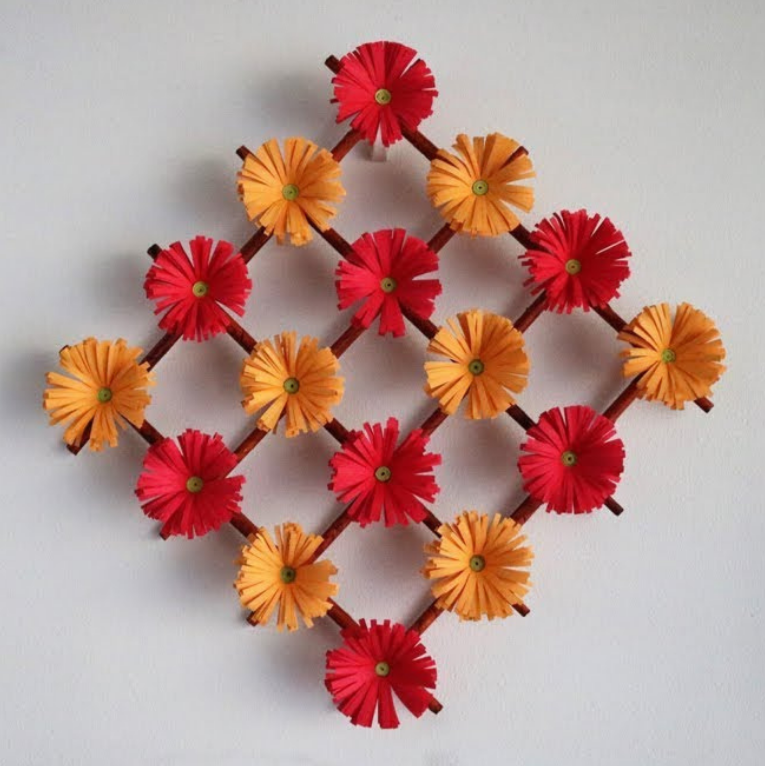

Hanging Plant Display
A decorative wall arrangement made of colorful paper flowers in shades of red and orange. The flowers are arranged in a heart-like cluster, creating a bright and cheerful handmade wall decoration.
- 🌸 Adds color and texture to walls.
- ✂️ Made from colored paper, scissors, and glue to craft flowers.
- 🖼️ Can be arranged in 3D, garlands, or clusters for a stylish look.
- 💡 Perfect for bedrooms, living rooms, or as a DIY decor statement.